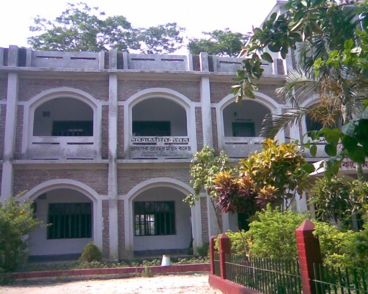

|
Name of Examination |
Major | Course Duration | Year Of Passing | Board/University | GPA/CGPA |
|---|
| SSC | Science | 2 years | 2012 | Comilla | 4.94 |
Ramchandrapur R.K High School (2006-2012)
I have been Complete my SSC exam in 2012 from this School.It's the most reputated school in Muradnagar Upzila.It was founded in 1918. For More Image Gallery and News Visit :
Adhyapak Abdul Majid College (2012-2014)

I have been Complete my HSC exam in 2012 from this College.Adhyapak Abdul Majid College was established in 1995 by Processor Abdul Majid, Chairman of the Popy Library. Majid established it in a rural area to reach underserved students. A new grading system was implemented at the college in 2003. For More Image Gallery and News Visit :
Daffodil International University

I am a undergraduate student of this University..Daffodil International University (DIU; is a co-educational private university located in Dhanmondi, Dhaka, Bangladesh. It was established on 24 January 2002 under the Private University Act, 1992.[2] DIU is the first university in Bangladesh to have signed the UN's Commitment to Sustainable Practices of Higher Education Institutions [3]. For More Image Gallery and News Visit :